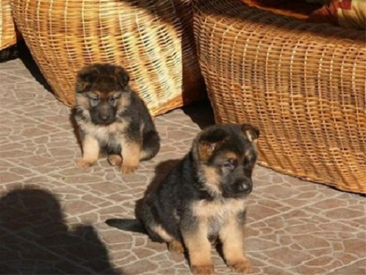
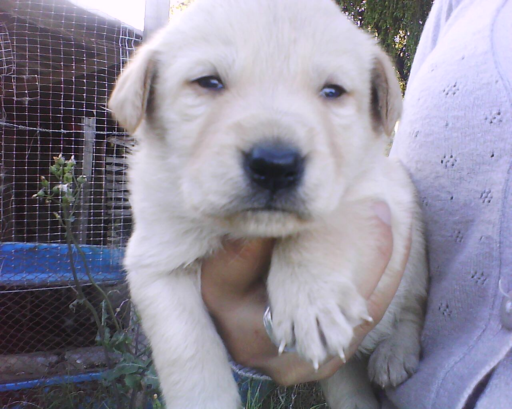

PERROS
Te presentamos la galeria de los perros que tenemos en la fundación para adoptar o apadrinar.
-

Ted y Paca
Edad: 5 meses
A estos hermanitos les encantaria que no los separaran. -

PERLA
Edad: 1 año. Es una hermosa perrita muy consentida y le gusta jugar.
-
Lulu
Edad: 2 años
A lulu le encanta jugar, correr y saltar -
PITO
Edad: Menos de un año
Es un hermoso cachorro que nunca ha sabido lo que es tener un hogar.
Si vas a adoptar uno de estos perritos envianos tus datos al correo adoptaunperro@patitasdecorazon.com.